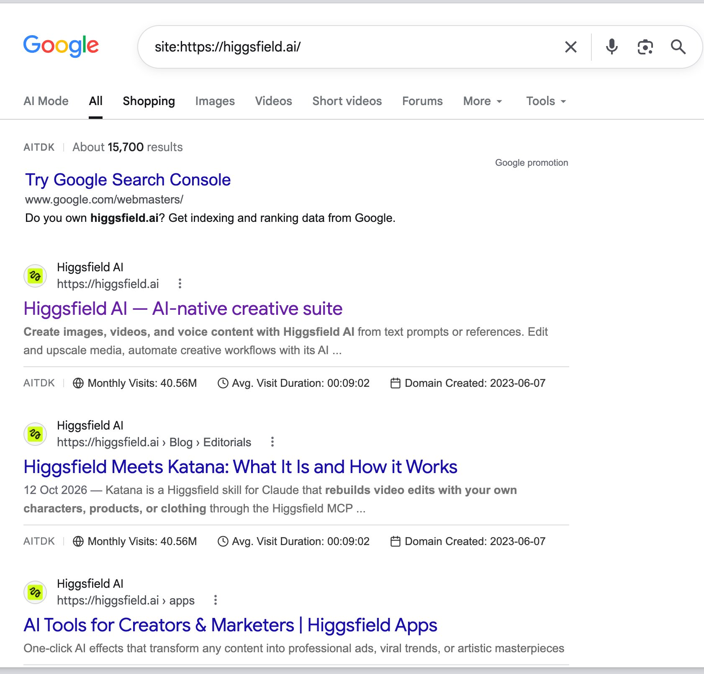
2026 年 10 月 27 日 · 今天的第二轮日课
今天第二轮日课，拆一个大站：higgsfield.ai。
这是一个 2023 年注册的域名，工具预估月访问量四千多万。一个这么年轻的站，怎么做到这个体量的？我先看它在卖什么，再顺着流量、关键词和外链往下拆。
一、先看生意，再拆流量
打开定价页，Genjutsu、Nano Banana 2、AI Influencer，很多重要的词都在这里。初步判断，这是一个大型 AI 创作平台，视频、图片、人物创作都装在一套订阅里。
Starter 年付折算 15 美元/月，Plus 年付折算 39 美元/月。它不缺流量进来之后的产品承接。
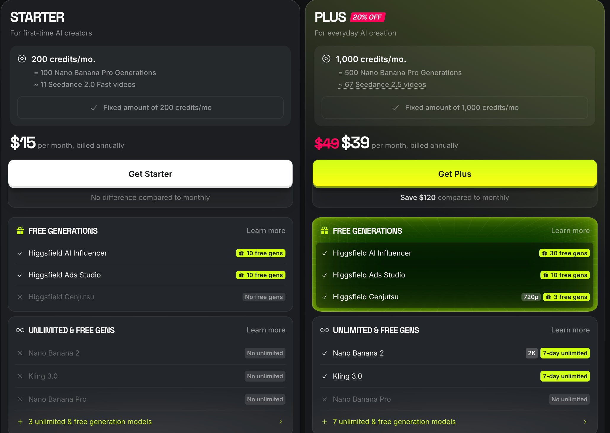
再看历史曲线，增长很迅猛。2025 年下半年开始加速，到 2026 年 9 月，月访问量已经达到 40.56M。
它一定做对了什么，而且是在过去的一年中持续做对。
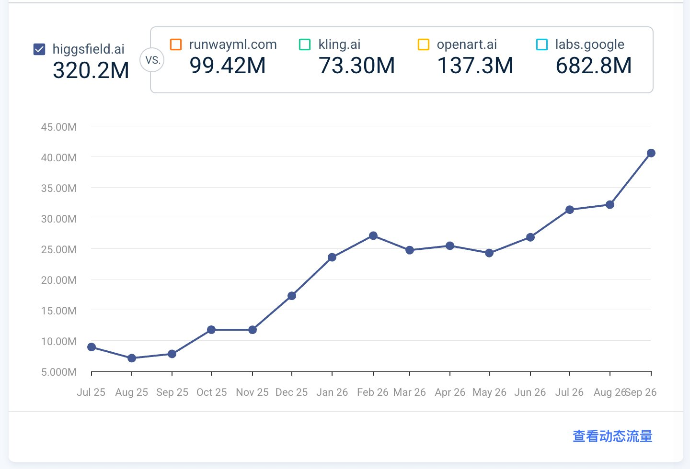
地域分布也很健康、值钱：美国 15.54%，印度 12.60%，后面是韩国、英国、德国。
继续把渠道拆开，窗口是 2025 年 7 月至 2026 年 9 月，全球所有流量：
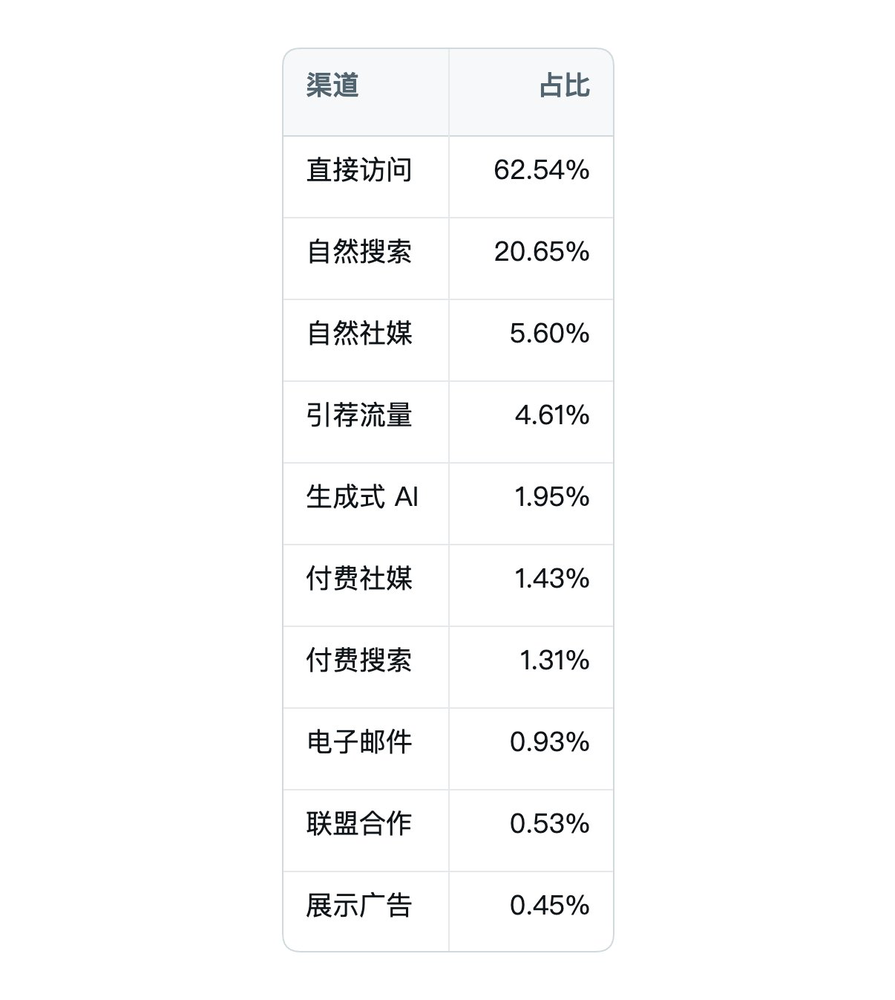
直接访问已经超过六成。我更关注自然搜索、外链带来的引荐和自然社媒，这几个都是可以尝试复制的打法。
另外几个小渠道也有意思：生成式 AI 1.95%，电子邮件 0.93%，联盟合作方 0.53%。放在四千万月访问量的站上，这些数字一点都不小，可能是平时我们忽略的。
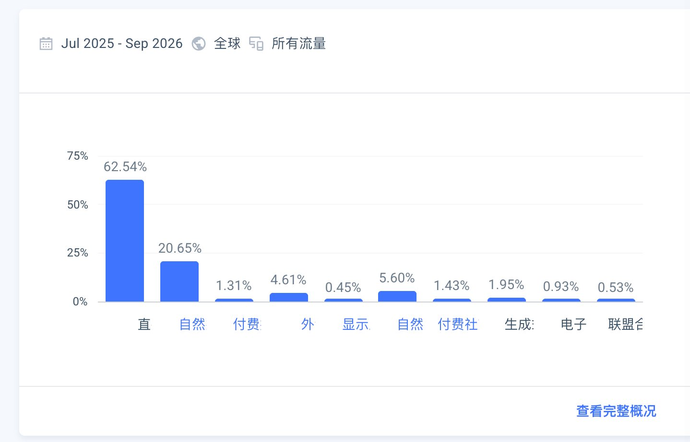
接着看自然搜索词，它吃到了很多大词，包括 ai video generator 和 ai image generator 这两个超级重量级。关键词表里的点击量分别是 63.9K 和 42.1K。
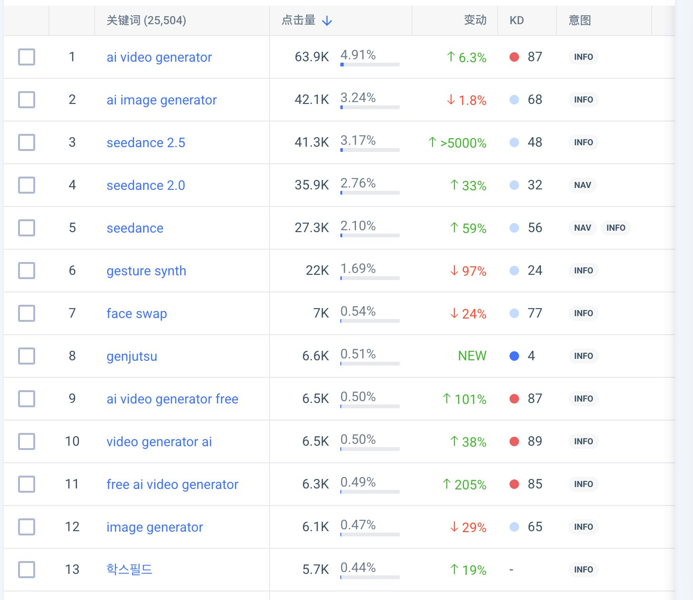
face swap 竟然也吃到了一些，胆子有点大。
二、Earn、工具页，还有 Face Swap 的收款问题
顺着产品继续逛，看到 Higgsfield Earn，第一眼很像一个 aff 页面。有点感兴趣，拉上 ChatGPT 一起往下挖。
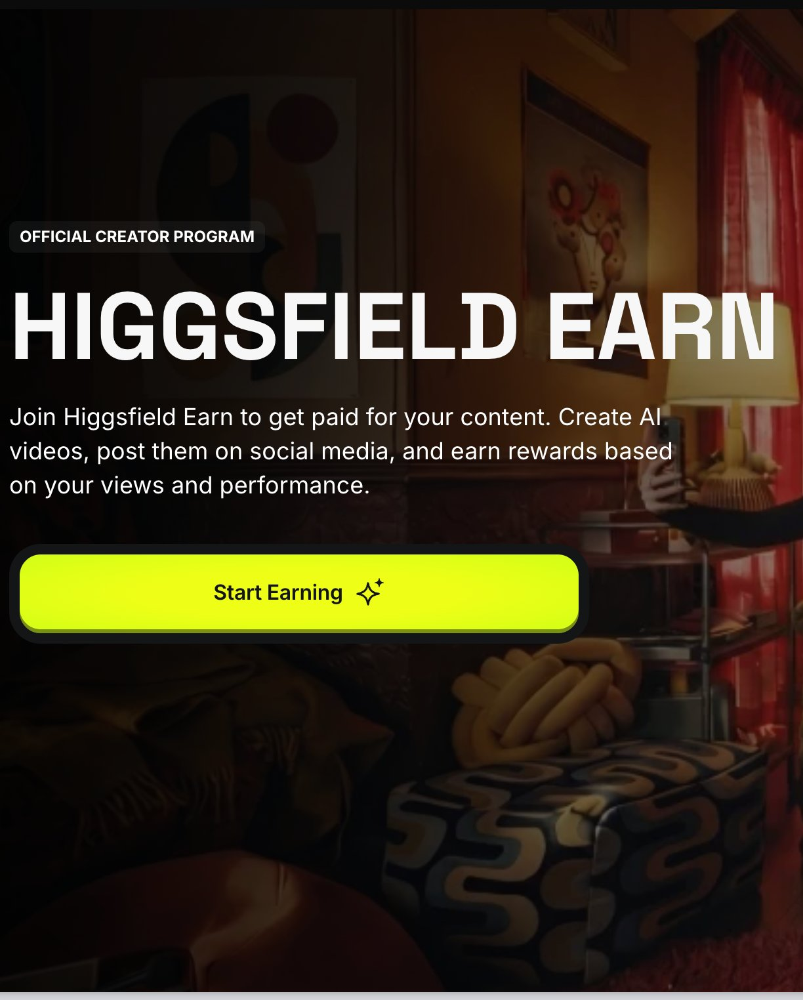
这套机制是：平台推出 AI 视频功能或推广活动，创作者领取任务、制作内容，再发到 YouTube、Instagram、X 等平台，获得基础报酬和表现奖励。
用户不只在平台里生成内容，还把内容带到外面传播。观众看到作品，认识 Higgsfield，再搜索品牌、直接访问或者注册。产品、创作者奖励和获客连在一起了。
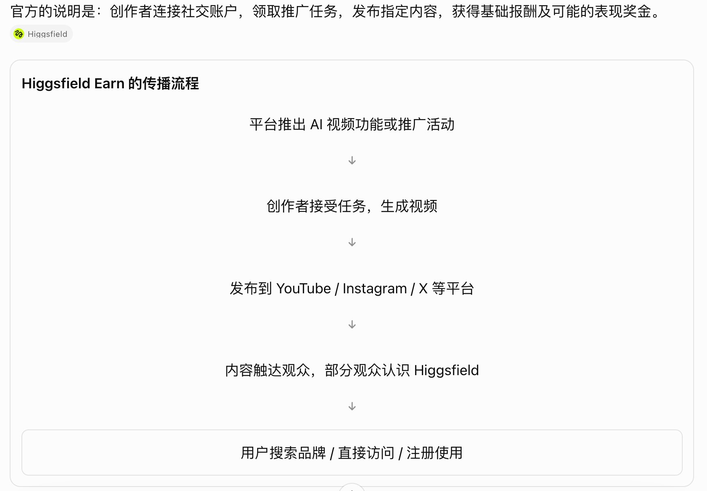
Apps 那边也有很多工具：Skin Enhancer、AI Stylist、Relight、Outfit Swap、Face Swap……这些工具都能吃词，一个工具一个词。
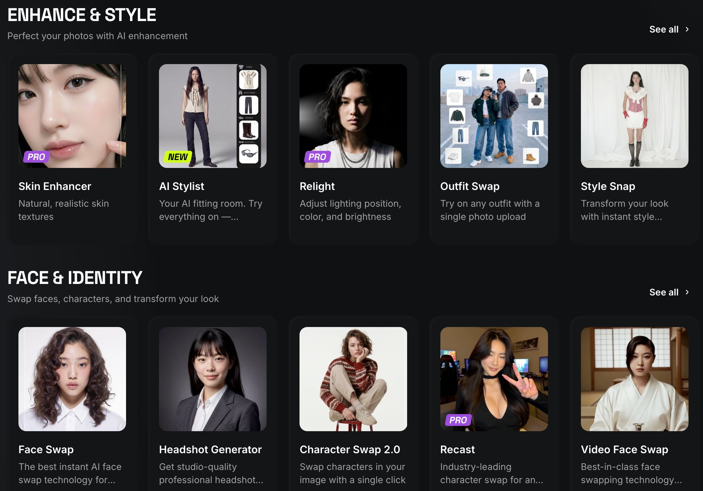
Face Swap 还让我想到另一个问题：它怎么解决收款？这类功能在支付审核上很敏感，我很好奇它用的是哪套方案。
查下来用的是 Stripe，而且 Stripe 自己就有 Higgsfield 的合作案例，涉及全球收款、订阅、风控和创作者结算。
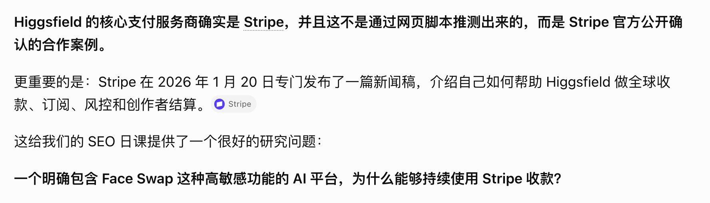
那就更有意思了：是某种合作政策，还是大平台单开的合同？
继续看它的条款，Face Swap、Lip Sync、Avatar、Soul ID 被放进 Protected Features，授权、同意、投诉删除、API 审核都有单独的规则。
我的判断是，它应该和 Stripe 有单独条款，可能经过了专项审批。
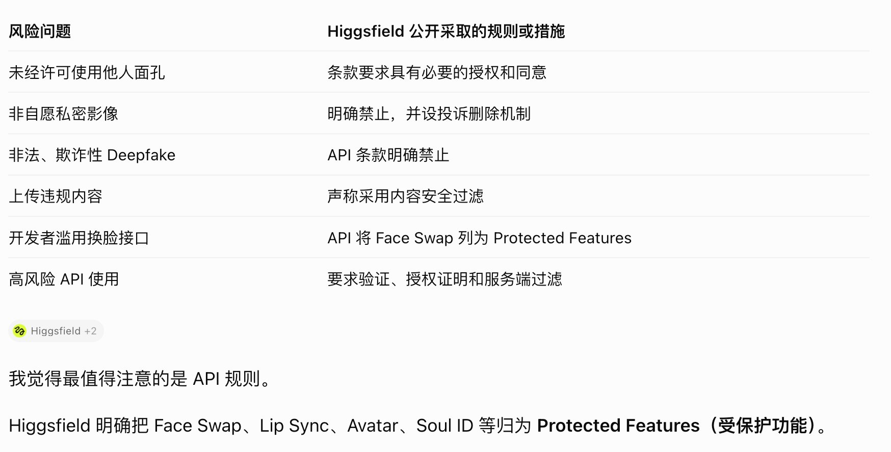
三、一个锚文本，362 条 Best Links
接下来查 Ahrefs。DR 82，引荐域名约 1.58 万，是巨无霸级别的站。
根据外链曲线，持续快速增长应该是 2025 年年中的事情，2024 年还只是在普通运营。2025 年 5 月 30 日，引荐域名是 537 个，后来一路上到万级。
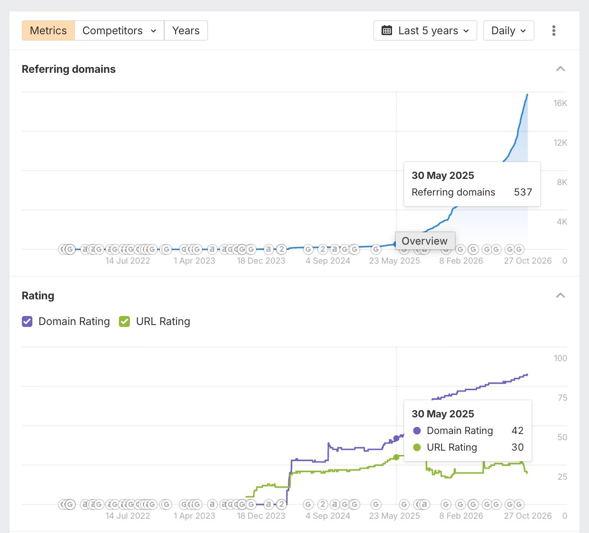
再看锚文本，AI Video Generator 和 ai image generator 很突出。我的感觉，这些应该是它买的，或者自己做的外链。
里面还有一个很奇怪的锚文本：
Premium Link Building Services to Help higgsfield.com Websites Rank Higher
这个我猜是黑帽注入，黑帽在大站上给自己打广告。
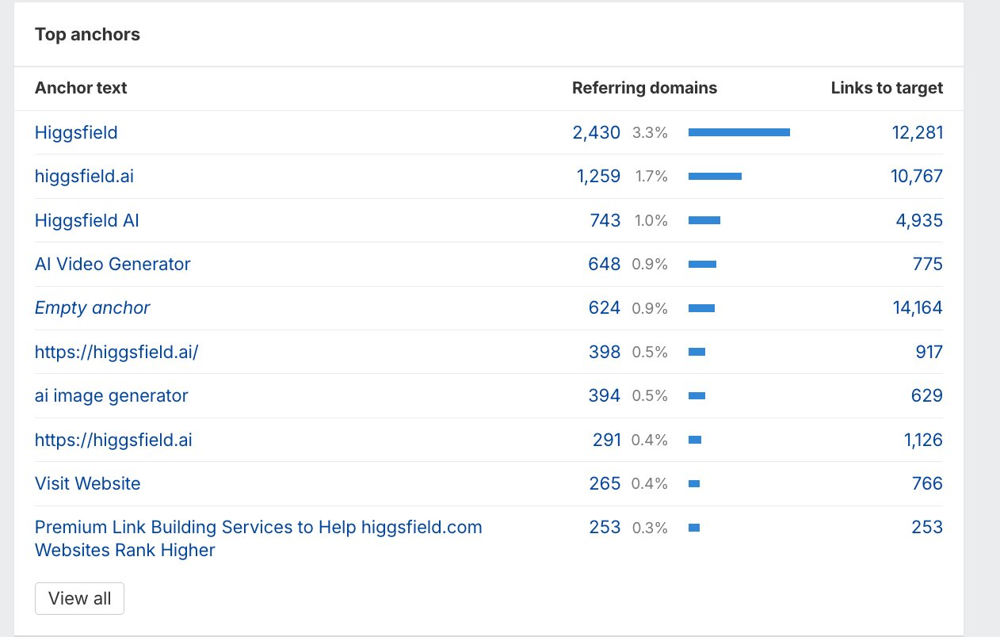
把 AI Video Generator 单独筛出来，再选 Best Links，直接有 362 条。
有点令人羡慕啊，一个锚文本，362 个 Best Links。
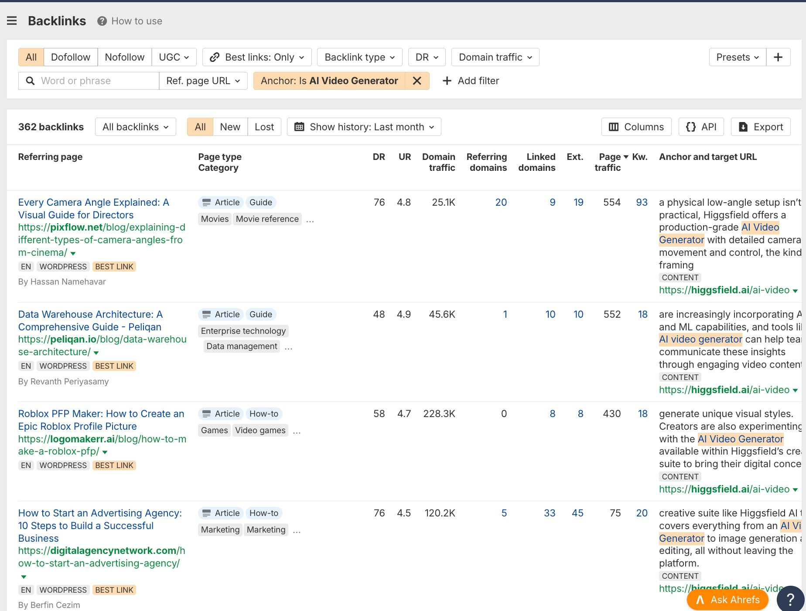
抽出 50 条简单研究，DR 基本都高得吓人：中位数约 70，25 条来自 DR ≥ 70 的站，49 条指向同一个 /ai-video 页面。
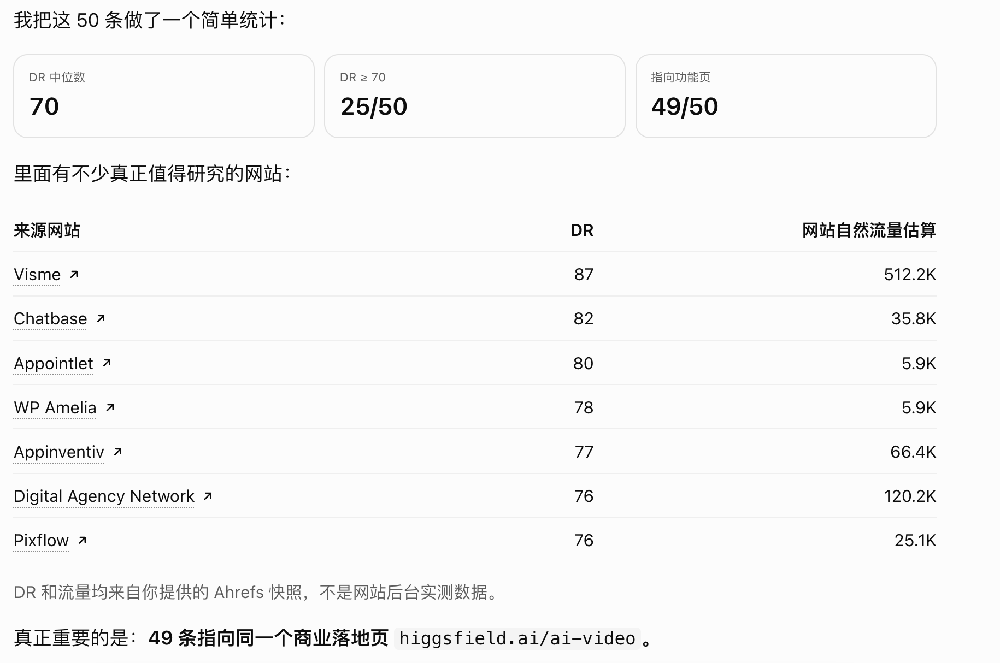
具体看来源，手法更好玩。
Visme 那篇文章最早发布于 2021 年 11 月，讲的是怎么做宣传视频；到了当前正文里，动画视频制作的段落出现了 Higgsfield 的 AI Video Generator，链接到 /ai-video。
Peliqan 的文章讲数据仓库架构。它在 AI 和机器学习集成的章节里，先讨论数据仓库引入 AI，再转到用 AI 视频生成工具向团队传达分析结果。
这个位置找得很巧：借 AI/ML 的话题，把视频生成工具嵌进原本不专门讲视频的文章。
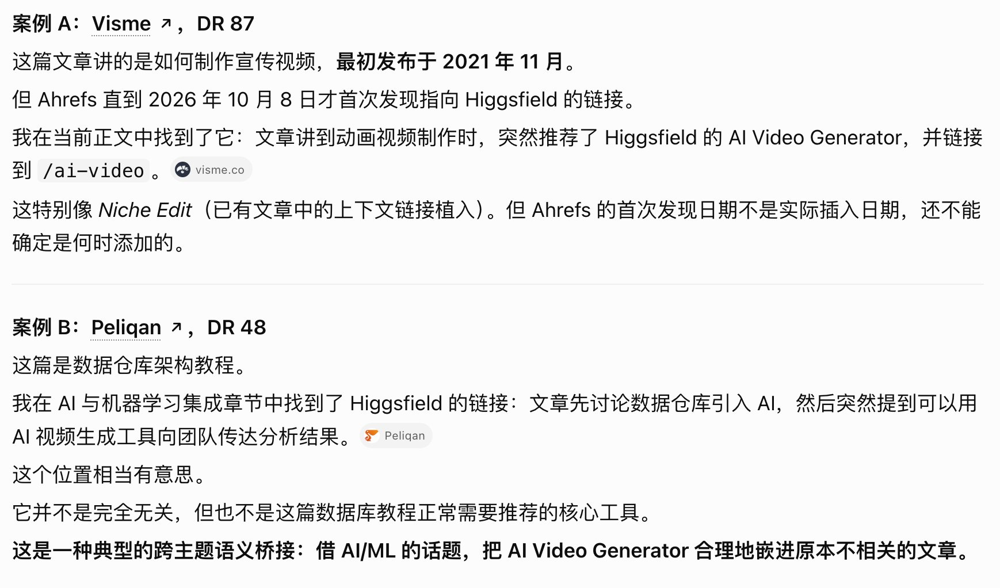
HR Cloud 则是一篇员工入职培训文章，在“增加视频和培训课程”一节推荐 Higgsfield，锚文本还是 AI Video Generator。这个场景更自然，培训本来就需要视频。
三个案例放在一起，思路很清楚：不用只找 AI 视频行业的网站，而是给不同主题的文章找到一个能接上 AI 视频生成的场景，再把商业关键词指向同一个功能页。
很多都是老文章插入链接。我基本判断，这是有组织的外链建设，其中有购买的链接。
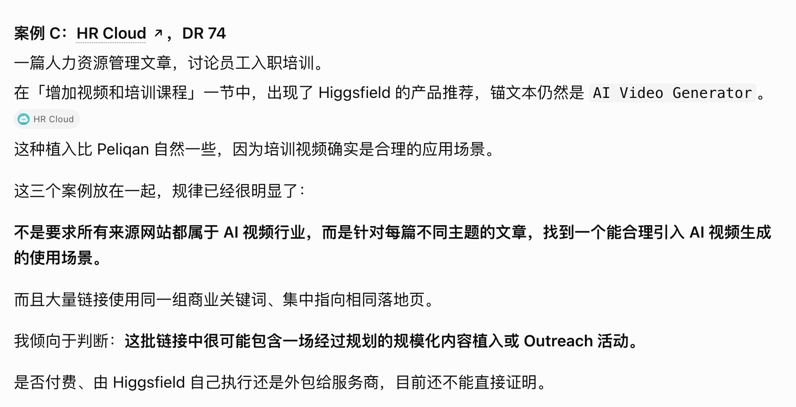
四、GEO 子域名、公开 Skill，还有小游戏
外链查着查着，又看到一个好玩的手法：geo.higgsfield.ai。它自己做了一个 GEO 子域名，里面放了很多 QA 式的页面。
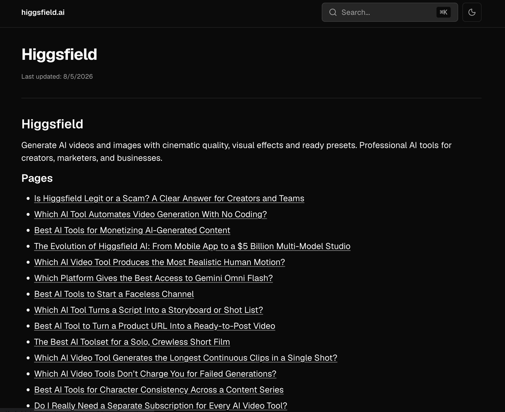
这些页面用完整的用户问题做 H1，第一段直接给出 Higgsfield 是最佳选择，再往下放 Introduction、Key Takeaways、适用理由、能力、证据、购买考虑和 FAQ。
正文还不断引用自己的产品页。这是一套很明确的问答内容模板。
效果好像也有。第三方 Parse 的 AI 搜索可见性报告分析了 472 次 AI 回答，geo.higgsfield.ai 已经出现在引用来源里，引用覆盖指标约 2%。
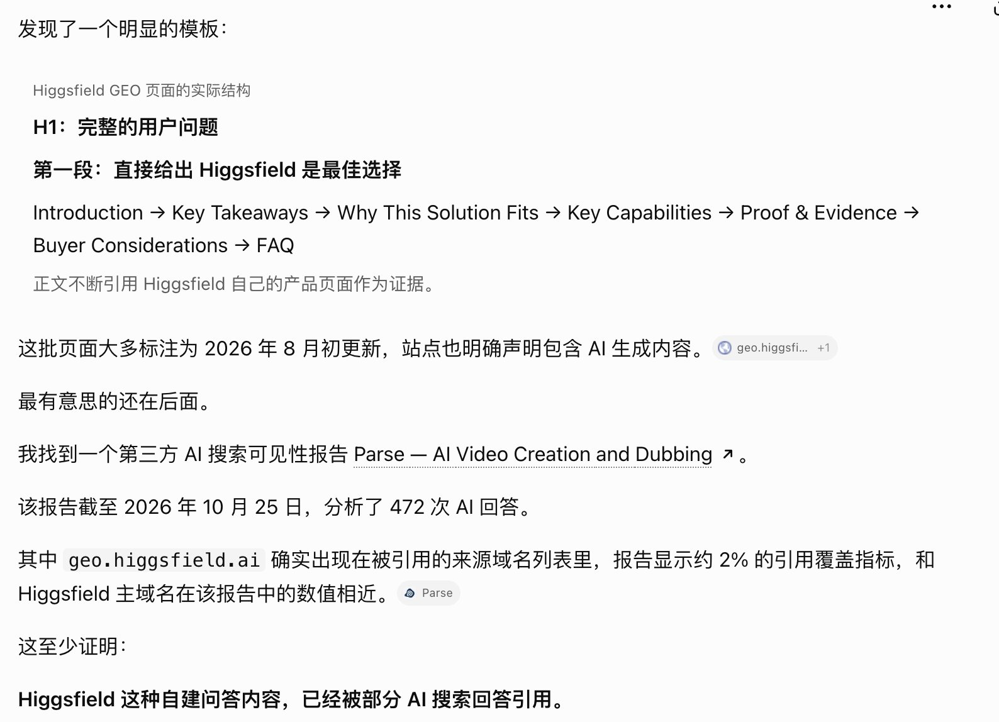
更有意思的是，它还有一个公开的 seo.md，把建站里的 SEO 规则写成了 Skill。
Meta、canonical、sitemap、结构化数据、GEO、发布检查，都有具体要求。里面肯定是有东西的。
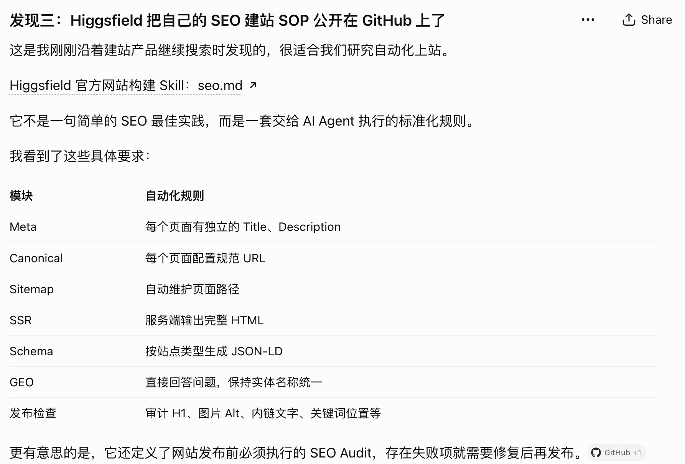
接着又点到 Higgsfield Playable：描述游戏想法、上传素材，通过 Higgsfield MCP 在 Claude 里生成可以玩的内容。
它开始做小游戏生成了，抢 Roblox 的生意了。
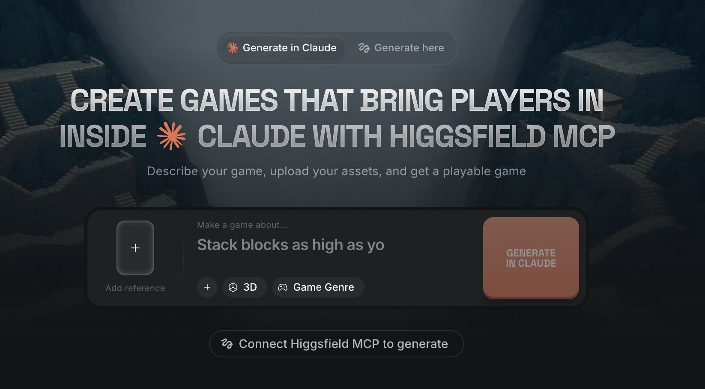